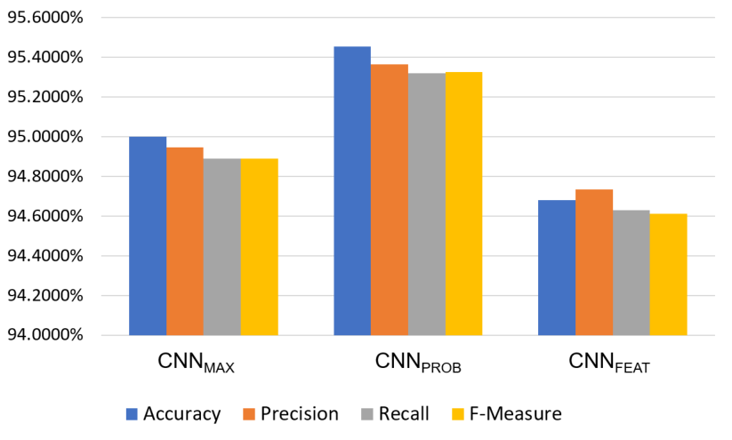

Telling eleven handwritten Indian scripts apart with a team of small neural networks
A bank cheque or a postal card in India can mix several scripts on one page. Before software can read such a document, it has to know which script each word is written in. We tackled that for eleven Indian scripts with a team of small convolutional neural networks (CNNs), instead of one big network, so that the whole thing trains on a cheap graphics card.
The problem
India has many scripts, and they share ancestry, so many letter shapes look alike. Handwriting makes it harder: pens differ, writers differ, and the same writer changes from day to day. Doing this for a whole page is too coarse, because one page can change script from line to line or even word to word. So we worked on single words.
We used the public PHDIndic_11 collection: 11,000 word images, 1,000 for each of Bangla, Devanagari, Gujarati, Gurumukhi, Kannada, Malayalam, Oriya, Roman, Tamil, Telugu and Urdu. We trained on 8,800 words and tested on the other 2,200.
The idea
A CNN learns to spot patterns by sliding small filters over an image. Deep ones usually need strong, expensive GPUs. We kept every network small and made them different from each other in three ways, then let them work as a committee.
- Depth: two or three layers of convolution and pooling.
- Size: the word image is shrunk to 32×32, 64×64 or 128×128 pixels. A filter covers a larger part of a small image, so each size sees the word differently.
- Wavelets: the image is either left as it is, or passed through a seven-level Haar wavelet transform.
The wavelet step needs a word of explanation. It splits an image into a blurry, smoothed version and the details, which are mostly edges. We dropped the smoothed part and rebuilt the image from the details alone. The page background fades and the pen strokes stay. That should help a small network, which has little room to learn how to ignore a noisy background on its own.
Two depths, three sizes and two kinds of input give twelve networks.


Combining the answers
Each network produces eleven probabilities, one per script. We tried three ways of combining the twelve answers. In max-voting each network votes for its top script and the most popular script wins. In probabilistic voting we average the probabilities and take the largest. In the third method we take the 1024 numbers each network computes just before its final layer and feed them all to a small separate classifier. Each network was trained on its own beforehand. We trained with the Adam optimiser on an Nvidia GT 730 with 4 GB of memory, a card the paper prices at around 90 US dollars.
What we found
Single networks scored between 75.5% and 92.2% accuracy (Table 3). Merging networks almost always helped, which tells us they make different mistakes. One exception: merging the 64 and 128 pixel wavelet networks lowered accuracy, because the 128 pixel wavelet network did poorly. Wavelets helped most at medium image sizes and hurt at the largest.
Averaging the probabilities worked best, and the paper reports a maximum accuracy of 95.04%. Probabilistic voting did better than max-voting and better than simply joining the networks' features (feature concatenation).

Results in more detail
Table 3 of the paper lists every network. A row name has three parts: RAW for the plain image or HWT for the wavelet image, then the image size in pixels, then the depth (2 or 3). A row with the depth left out, such as HWT,64, merges the two depths. A row such as HWT,64_128 merges two sizes, and a bare RAW or HWT merges all three. The last three rows, MAX, PROB and FEAT, are the three ways of combining all twelve networks. Below are 14 of the 29 rows.
| Architecture | Accuracy | Precision | Recall | F-Measure |
|---|---|---|---|---|
| CNN RAW,128,2 | 87.3182% | 87.5172% | 87.4528% | 87.0640% |
| CNN RAW,128,3 | 90.0000% | 89.8828% | 89.9499% | 89.8364% |
| CNN HWT,64,2 | 91.5000% | 91.3082% | 91.3473% | 91.2758% |
| CNN HWT,64,3 | 92.1818% | 92.1121% | 92.0389% | 91.9549% |
| CNN HWT,128,3 | 75.5455% | 79.9510% | 74.5490% | 74.9420% |
| CNN RAW,128 | 91.4091% | 91.3026% | 91.4039% | 91.2335% |
| CNN HWT,64 | 94.2273% | 94.0972% | 94.1016% | 94.0543% |
| CNN HWT,128 | 86.7273% | 87.3288% | 86.2867% | 86.4852% |
| CNN HWT,64_128 | 89.0900% | 89.4100% | 88.6900% | 88.8800% |
| CNN RAW | 93.6818% | 93.6086% | 93.6015% | 93.5799% |
| CNN HWT | 92.1818% | 92.1451% | 92.0924% | 92.0585% |
| CNN MAX | 95.0000% | 94.9456% | 94.8896% | 94.8893% |
| CNN PROB | 95.4545% | 95.3646% | 95.3199% | 95.3265% |
| CNN FEAT | 94.6818% | 94.7328% | 94.6288% | 94.6127% |
Merging the two depths helps at one size. For wavelet images at 64 pixels the two networks scored 91.5000% and 92.1818%, and the merged row scores 94.2273% (Table 3). For raw images at 128 pixels the pair scored 87.3182% and 90.0000%, and the merge scored 91.4091% (Table 3). The paper reads this as the networks complementing each other. A correlation analysis points the same way. Individual networks correlate with the three combined models at values between 0.7315 and 0.9350, while the combined models correlate with each other at 0.9440 or higher (Table 4). We take this to mean that the individual networks learnt different things, so there was room to gain by merging them.
Depth and image size interact. Deeper networks handled larger raw images better. For wavelet images, extra depth hurt on larger inputs. Raw images did well at higher resolution. One way to picture the size effect is the area each filter sees. In the two-layer network the first filter covers 5×5 pixels of the original 128×128 image at full size, but 20×20 pixels when the image is shrunk to 32×32 (Table 1).
Table 5 breaks the probability-averaging ensemble down by script. Telugu has recall 1 and an F-measure of 0.9909502. Gujarati and Kannada follow at 0.9858491. Bangla is lowest at 0.8882521, with Devanagari (0.9252874) and Malayalam (0.9272727) next.
| Language | Precision | Recall | F-Measure |
|---|---|---|---|
| Bangla | 0.8857143 | 0.8908046 | 0.8882521 |
| Devanagari | 0.9415205 | 0.90960452 | 0.9252874 |
| Gujarati | 0.9858491 | 0.98584906 | 0.9858491 |
| Gurumukhi | 0.947619 | 0.9255814 | 0.9364706 |
| Kannada | 0.9766355 | 0.9952381 | 0.9858491 |
| Malayalam | 0.9230769 | 0.93150685 | 0.9272727 |
| Oriya | 0.9253731 | 0.97894737 | 0.9514066 |
| Roman | 0.9842105 | 0.94923858 | 0.9664083 |
| Tamil | 0.9540816 | 0.93969849 | 0.9468354 |
| Telugu | 0.9820628 | 1 | 0.9909502 |
| Urdu | 0.9839572 | 0.9787234 | 0.9813333 |
We compared the ensembles with the baseline reported for this dataset by its creators, which uses hand-crafted features, and with two standard networks, LeNet and AlexNet. For a fair comparison the baseline was applied to the cropped word images, and we resized our images to the input size that LeNet and AlexNet expect. Our individual networks are closer to LeNet in size. AlexNet is considerably larger, yet it does not beat our ensemble (Table 6). Training used the Adam optimiser with a learning rate of 1×10−4, batches of 50 images and dropout of 0.5 on the 1,024-unit layer.
| Approach | Accuracy |
|---|---|
| Obaidullah et. al 2017 | 91.00% |
| LeNet 1998 | 82.00% |
| AlexNet 2012 | 92.14% |
| Our method (CNNmax) | 95.00% |
| Our method (CNNprob) | 95.45% |
| Our method (CNNfeat) | 94.68% |
Discussion
Our reading is that small networks can be made to work as a committee. Merging improved accuracy almost every time, and the correlation analysis suggests why: each small network learnt something different, so each had something to add. Wavelets helped because a shallow network has little room to learn a background-cleaning filter on its own, so we forced that step. The cost is lost information and sparse images, which fits the drop we saw at large sizes.
Probability averaging beat feature concatenation because we trained the twelve networks one at a time. Their features hold a lot of redundant information, so the joined list is not as good as it could be. Training all networks together against one common loss would, we believe, give much better features, and the paper calls it a valid way to go. We left it out on purpose. We wanted networks that can be trained individually on cheap hardware.
The limits are plain. Bangla stayed the hardest script. Everything was tested on single words of one dataset, PHDIndic_11, with 11,000 images.
The point is about hardware as much as accuracy. The paper prices the graphics card at around 90 US dollars and calls it household level, and a team of small networks was trained on it.
Sources
The figures and tables listed here are taken from the paper cited at the top of this page; the numbers quoted in the text come from it too.
- Figures: Fig. 5, Fig. 6, Fig. 12
- Tables: Table 1: area of the original image seen by each filter, for each input size; Table 3: accuracy, precision, recall and F-measure of each single network, each hierarchical combination and the three ensembles; Table 4: correlation between the single networks and the three combined models; Table 5: precision, recall and F-measure for each script; Table 6: accuracy of our method against the baseline, LeNet and AlexNet
Acknowledgements
This work was partially supported by the project order no. SB/S3/EECE/054/2016, dated 25/11/2016, sponsored by SERB (Government of India), and carried out at the Centre for Microprocessor Application for Training Education and Research, CSE Department, Jadavpur University. The authors also thank the reviewers for their valuable suggestions, which helped to improve the quality of the manuscript.
Cite the paper
S Ukil, Swarnendu Ghosh, SM Obaidullah, KC Santosh, K Roy, N Das (2019). Improved word-level handwritten Indic script identification by integrating small convolutional neural networks. Neural Computing and Applications, Vol. 32, No. 7, pp. 2829–2844 · Springer.
@article{ukil2020improved,
author = {Ukil, S and Ghosh, Swarnendu and Obaidullah, SM and Santosh, KC and Roy, K and Das, N},
title = {Improved word-level handwritten Indic script identification by integrating small convolutional neural networks},
journal = {Neural Computing and Applications},
volume = {32},
pages = {2829--2844},
publisher = {Springer},
year = {2020},
doi = {10.1007/s00521-019-04111-1}
}